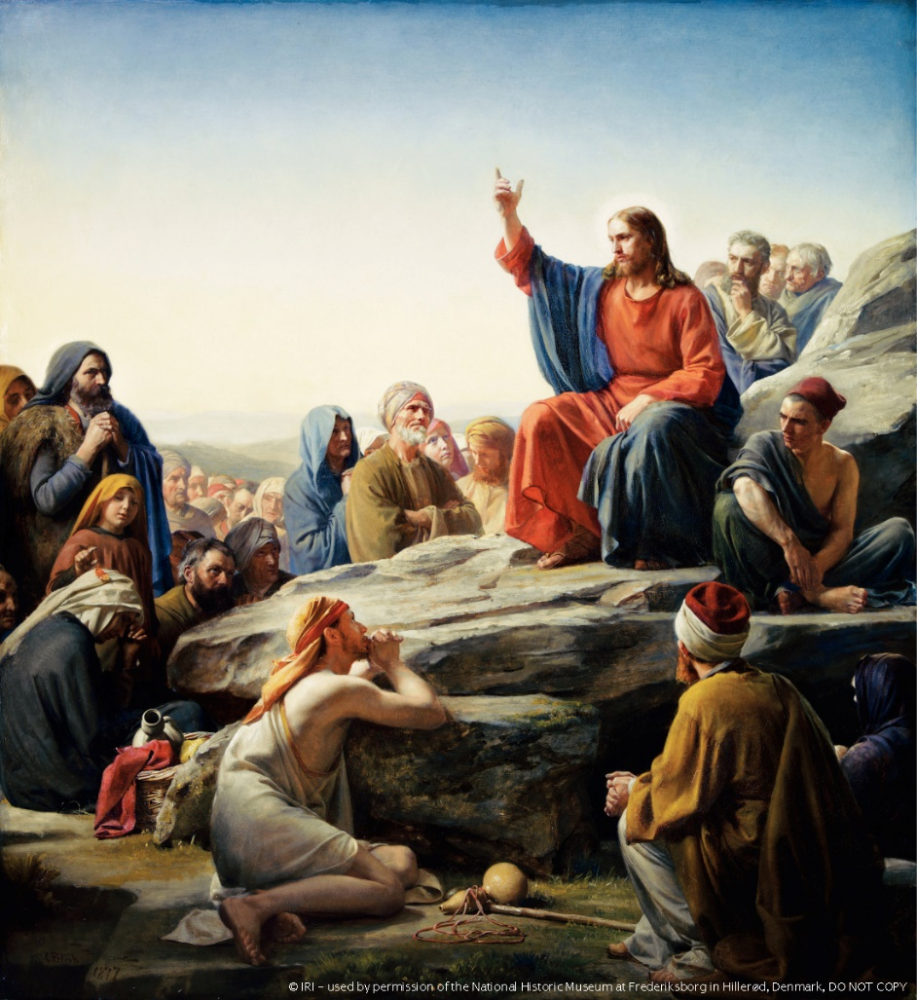
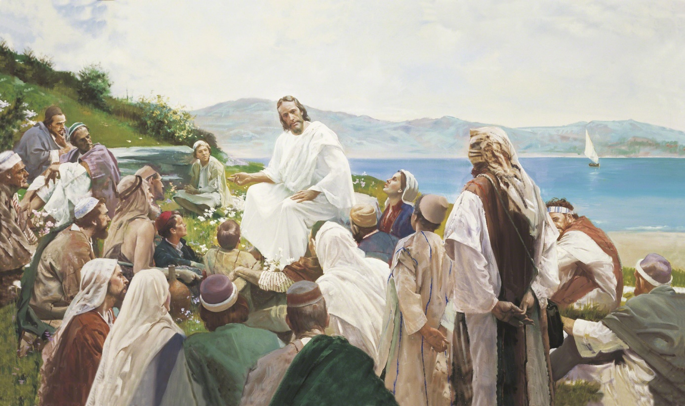
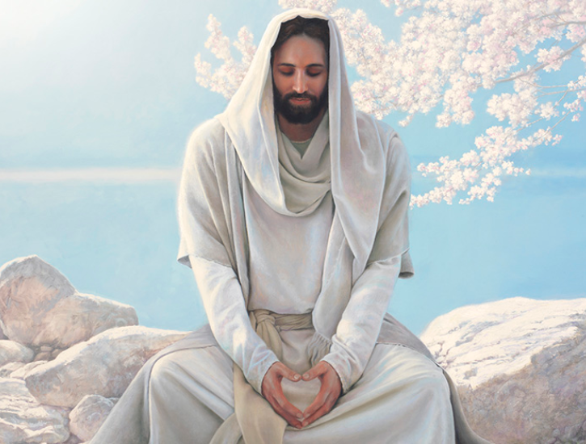
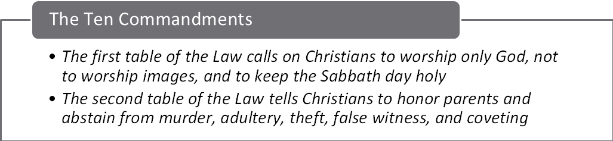
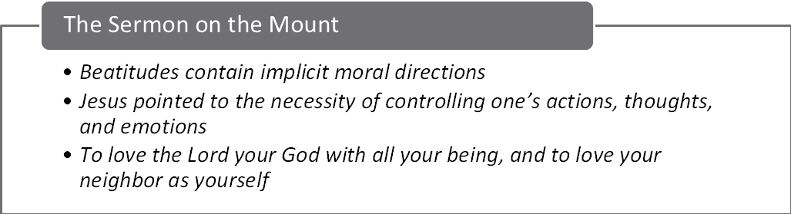

Kingdom ethics shape character, relationships, inclusion, enemy-love, and public responsibility.
2 · A Worshiping Community
Liturgy, preaching, saints, music, and spiritual gifts organize communal encounter with God.
3 · A Sacred Rhythm
Sacraments and the liturgical year carry Christians from initiation through death and resurrection hope.
Guiding question: How do repeated practices turn Christian beliefs into a lived identity?
Section I
The Way of Jesus
What kind of person—and what kind of community—does the kingdom of God call into being?
Coverage Addition · Jesus and His Message
The Kingdom of God
The organizing theme of Jesus's preaching
God's Rule
Not simply a place: God's active reign over human life and creation.
Already Present
Healings, forgiveness, restored community, and changed lives signal its arrival.
Not Yet Complete
Jesus also points toward a future fulfillment of justice, peace, and renewal.
Christian hope lives in the tension between what God has begun and what has not yet been completed.
The Life, Death, and Resurrection of Jesus Christ
Jesus traveled throughout Judea teaching and performing miracles
Sermon on the Mount
Beatitudes (comes from the Latin word beatus, meaning "blessed" or "flourishing")
“Blessed Are..”

The Life, Death, and Resurrection of Jesus Christ
Sermon on the Mount
Beatitudes (comes from the Latin word beatus, meaning "blessed" or "flourishing")
“Blessed Are..”
Matt 5: 3-12 – their character and privileges
Matt 5: 13-16 their responsibilities
Significance
Counter-Cultural Values
Kingdom Ethics
Blueprint for Christian Living
The Life, Death, and Resurrection of Jesus Christ
Sermon on the Mount
Beatitudes – “Blessed Are..”
Matthew’s Antitheses: The Higher Law
“Ye have heard of old . . . But I say”
The Life, Death, and Resurrection of Jesus Christ
Sermon on the Mount
Beatitudes – Transformation of the Believer
Matthew’s Antitheses: The Higher Law – Transformation of the Law
Fulfillment through inward motives as well as outward action
Significance
Fulfillment of the Law (Matt 5:17)
Inner Transformation (Outward action to inward motivations)
Call to higher moral and spiritual standard
Parables

Often taught in Parables
“without a parable spake he not unto them” (Mark 4:34)
Greek origin, meaning setting side by side, a comparison
Narrative, metaphor, brevity
Parables demand interpretation
The Life, Death, and Resurrection of Jesus Christ
Primary message centered on Love
Matt 22: 36-40
Love God (Deut 6:5)
Love Others (Lev. 19:18)
Radical extension of inherited Jewish ethics
Matt 5: 39 – Turn the other cheek
Matt 5: 44 – Love your enemies

A New Commandment I Give Unto You
Coverage Addition · Jesus and His Message
Jesus at the Margins
The kingdom overturns ordinary boundaries of honor and belonging
Outcasts
Lepers, the poor, and people labeled "sinners"
Social Outsiders
Tax collectors, prostitutes, and Samaritans
Women
Women appear as disciples, patrons, witnesses, and conversation partners
Enemies
Love of enemy replaces retaliation and rejects revolutionary violence
Table fellowship becomes a visible sign that God's mercy crosses boundaries.
Ethical Foundations


Ethical Foundations
Pauline Epistles
Draw on the Ten Commandments to shape the moral life of Christians
Stress moral virtues of the Christian life
Trust in God, hope in the future God will bring, peace in one’s heart and in the church, and love for all people
Grounds the ethical life of the Christian in the life, death, and resurrection of Jesus
Coverage Addition · Ethics
Christian Ethics: From Neighbor to Society
Following Jesus involves both personal character and public responsibility
Character
Faith, hope, love, humility, forgiveness, and reconciliation
Neighbor
The Good Samaritan expands moral concern beyond familiar boundaries
Society
Churches address poverty, labor, war, racism, human rights, and care for creation
Liberation
Black, feminist, Latin American, and other theologies begin from experiences of oppression
Shared scriptures do not automatically produce one political program; Christians debate how love and justice apply.
Pause & Reflect
Which is the most demanding expression of kingdom ethics: enemy-love, solidarity with outsiders, inner transformation, or public justice? Why?
Section II
Worship & Community
How do words, bodies, buildings, music, and spiritual experience make a community Christian?
Christian Worship and Ritual
The first believers worshiped in the Jerusalem temple and synagogues
The Roman Catholic Church built itself around seven sacraments
Eastern Orthodox churches preserve shared liturgical traditions across regional branches
Protestant reforms, Catholic renewal, and Vatican II each reshaped the work of the people
Christian Worship and Ritual
Christian worship became increasingly public and elaborate after legal toleration and imperial patronage in the 300s
Formal church buildings were erected, and church officials dressed for worship in dress modeled after Roman government garb
Liturgical calendar was developed
Church buildings were designed for the community
Large basilicas changed the scale and social character of Christian gatherings
Other Worship Practices
Veneration of Saints (cultus): honor given to saints in shrines, churches, and other places
Different forms of Eucharistic liturgy existed in various areas
Protestant churches
Emphasis on preaching the Bible
Recognizing Baptism and Holy Communion as the two rites instituted by Jesus
Putting all services into the language of the people
Other Worship Practices
Charismatic movement: Stressed the use of supernatural gifts of the Holy Spirit
Charismatic - Groups inside Roman Catholic, Orthodox, and mainline Protestant churches
Pentecostal - Protestant churches where these practices are the norm
Gregorian Chant
Pause & Reflect
What changes when worship moves from a house gathering to a public institution—and what might remain continuous?
Section III
Sacraments, Sacred Time & Christian Hope
How does ritual carry the Christian story from initiation through death—and beyond death?
Coverage Addition · Worship and Ritual
Baptism and Eucharist
The two practices recognized across nearly all Christian traditions
Baptism
Initiation into Christian life
Water signifies cleansing, death and rebirth, and incorporation into the Church
Infant or believer's baptism; immersion or pouring
Eucharist / Communion
Remembers Jesus's Last Supper
Bread and wine proclaim participation in Christ
Understood as sacrifice, real presence, spiritual presence, or memorial
Common ritual forms express Christian unity, while their interpretation reveals major denominational differences.
Coverage Addition · Worship and Ritual
The Seven Sacraments
Catholic organization of ritual life from initiation through vocation and healing
Initiation
Baptism
Confirmation
Eucharist
Healing
Reconciliation
Anointing of the Sick
Service and Vocation
Marriage
Holy Orders
Orthodox Christianity also celebrates these sacred mysteries; most Protestants recognize baptism and Communion as the rites directly instituted by Jesus.
Coverage Addition · Worship and Ritual
The Christian Liturgical Year
Worship organizes time around the story of Christ
AdventExpectation and preparation
ChristmasIncarnation and birth of Jesus
EpiphanyChrist revealed to the nations
Lent and Holy WeekRepentance, Passion, and crucifixion
EasterResurrection and new life
Pentecost and Ordinary TimeSpirit, Church, discipleship, and mission
The calendar teaches doctrine through repeated practices, colors, readings, fasting, and feasting.
Coverage Addition · Worship and Belief
Death, Resurrection, and Christian Hope
Christian hope centers on resurrection and renewed creation, not only an immortal soul
Resurrection
God raises the dead; embodied life is transformed rather than merely discarded.
Judgment and Afterlife
Traditions teach heaven and hell differently; Catholic teaching also includes purgatory.
Funeral Practice
Prayer, Scripture, remembrance, burial or cremation, and hope in Christ's victory over death.
Christian traditions agree on resurrection in the creeds while differing over the sequence, imagery, and details of the afterlife.
Pause & Synthesize
Teaching & Story
→
Character & Action
→
Worship & Ritual
→
Identity & Hope
How do practices teach Christian belief even when no doctrine is being formally explained?